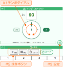

Show hints ヒントの表示
- Tap the web_asset icon on the screen to show hints. 画面内にある web_asset アイコンをタップすると、ヒントが表示されます。
The first step はじめの一歩
Let's learn the steps to get the click running. クリックを動かす手順を説明します。


- #1 Turn the tempo dial to change the tempo. #1 テンポダイアルをぐるぐる回してテンポを変更する。
- #2 Press "Start" in Playback to begin the click. #2 クリック操作の「開始」からクリックを開始。
- While the click is running, try changing the tempo or pressing "Stop". クリック中に、テンポを変更したり「停止」を押したりしてみる。
- #3 Use the Setting screen to change the tempo and other values. テンポ数などの変更は「#3 設定」画面で編集する。